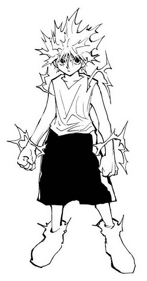

K I L L U A Z O L D Y C K
Killua Zoldyck (キルア・ゾルディック, Kirua Zorudikku?) es el coprotagonista y el mejor amigo de Gon Freecss. Es el tercero de los cinco hijos de la familia Zoldyck.
En un principio Killua se presenta como un personaje que parece similar a Gon, alegre, atrevido, y lleno de ideas maliciosas, aunque en el fondo resultan ser totalmente opuestos, siendo lo contradictorio a lo que cada uno aparenta; por lo que es verdaderamente un chico amable, atento y sensible, forma en la que no le gusta mucho mostrarse. Él es también uno de los personajes de mayor rapidez mental en la serie.
| D E B U T |
|---|
| MANGA - Capitulo 006 |
| ANIME - Episodio 03 |
| V O Z |
| JAPONES - Mariya Ise |
| P E R F I L |
| SEXO - Masculino |
| EDAD - 12 años |
| CUMPLEAÑOS - 07 de Julio |
| Color de Cabello - Plateado |
| Color de ojos - Azul |
| Altura - 1.58 m |
| Peso - 43kg |
| Tipo de Sangre - A |
| Ocupación - Cazador |
| Asesino (Antes) |